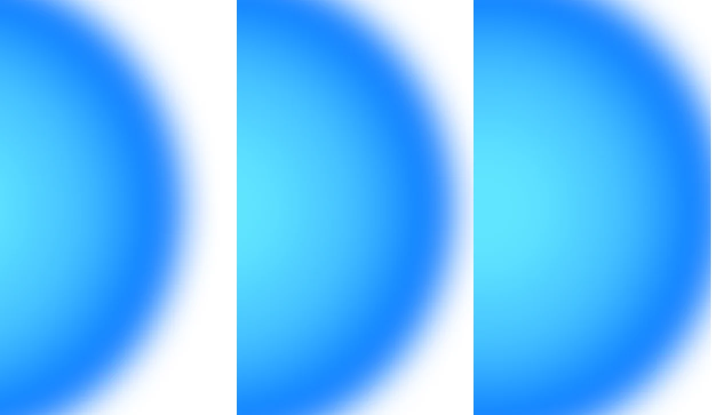
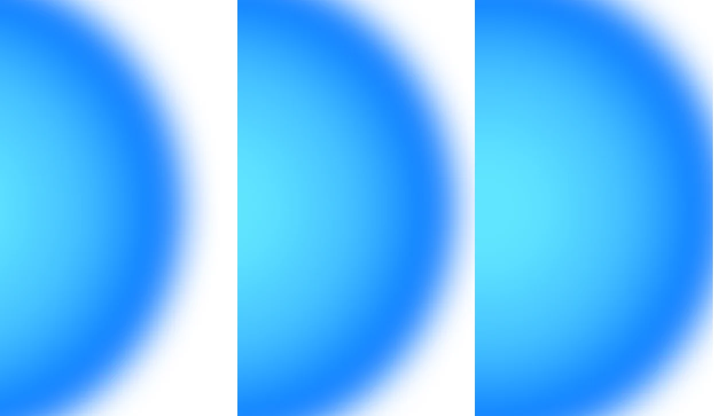

Main Palette
Палитра не содержит первичных и вторичных цветов, вся палитра работает через допустимые сочетания, без выделения основного цвета
G1 = gradient 1 (light)
G2 = gradient 2 (medium)
G3 = gradient 3 (dark)
Green G1
#00FE0D
Pink G1
#F900FE
Blue G1
#60E5FF
Yellow G1
#FFCC00
Purple G1
#DA02FE
Green G2
#01EE8F
Pink G2
#F4017E
Blue G2
#42BEFF
Yellow G2
#FFA200
Purple G2
#A616EA
Green G3
#03CEAC
Pink G3
#DF024D
Blue G3
#006EFF
Yellow G3
#FF4B00
Purple G3
#7F28CB

Пример использования полной версии логотипа на белом фоне

Пример использования полной версии логотипа в среде
Secondary Palette
Вторичная палитра дополняет основную и используется в статьях для выделения информации об авторе, источниках и ссылках
Добиться цвета можно либо используя прозрачность от основного цвета в виде 22%, либо применяя цвета, указанные на палитре
Green G1
#C7FFCA
Pink G1
#FEC7FF
Blue G1
#DCF9FF
Yellow G1
#FFF4C7
Purple G1
#F7C7FF
Green G2
#C7FBE6
Pink G2
#FDC7E3
Blue G2
#D5F1FF
Yellow G2
#FFEBC7
Purple G2
#EBCCFA
Green G3
#C8F4ED
Pink G3
#F8C7D8
Blue G3
#C7DFFF
Yellow G3
#FFD7C7
Purple G3
#E3D0F4

Источник статьи

Авторская статья
Original article
Почитать про фукции
Пример использования вторичной палитры на примере блока об авторе и информации о статье
Gray & Neutral Colors
Оттенки, используемые для текста в вебе и айдентике
Black
#000000
Dark Grey
#202020
Dark Grey In
#1E1E1E
Medium Grey In
#636366
Dark Grey In
#7F7F7F
Light Grey
#9A9A9A
Neutral
#C8F4ED
White
#FFFFFF
Tags Colors
В вебе активно применяются теги. Каждому тегу присваивается определенный цвет, который сохраняется на всем сайте.
Если какого-то тега нет, но его необходимо ввести, то можно выбрать любой цвет по следующему принципу:

крайний цвет (G3 в палитре)
Для тонирования текста тега необходимо использовать крайний цвет градиента, он же G3 в палитре, для поддержания равномерности стиля
Пример использования цвета в тегах
Примеры тегов, цвета для которых применены
Color Interaction
Цвета взаимодествуют друг с другом определенным образом. Важно сохранять принципы взаимодействия, чтобы не потерять айдентику. Ниже примеры сочетаемости
+
+
+
+
Взаимодействие цвета в айдентике на примере футболки
Градиенты могут находиться не на цветном фоне, правило рабатает с любым цветом из палитры Gray & Neutral Colors
Black
#000000
Dark Grey
#202020
Dark Grey In
#1E1E1E
Medium Grey In
#636366
Dark Grey In
#7F7F7F
Light Grey
#9A9A9A
Neutral
#C8F4ED
White
#FFFFFF
Embedding
Градиентные шары встраиваются в пространство по следующему сценарию: могут занимать все пространство, могут занять определеную часть, вертикальную или горизонтальную. Части, которые занимают шары могут тонироваться, могут нет, как и части, которые остаются без шара.


 
Примеры страивания шаров в пространство
Color and Typography Interaction
Взаимодействие цвета шрифта. который либо черный либо белый, с градиентами и изменение его, является основной идеей айдентики
Пример классической сочетаемости, рекомендуемой для использования в вебе и айдентике. Появление градиента при наложении на градиент

Взаимодействие типографики и градиента. Приближение
Правила, запрещающего использовать градиенты в едином визуальном фрейме нет. Главное, придерживаться правил сочетаемости внутри каждого носителя
Окрашивание типографики происходит вручную, что важно учитывать. Окрашивание должно производиться таким образом, чтобы форма градиента (всегда круг), повторялась, создавая изящные переходы
Логотип (полная и краткая формы) также поддается тонированию